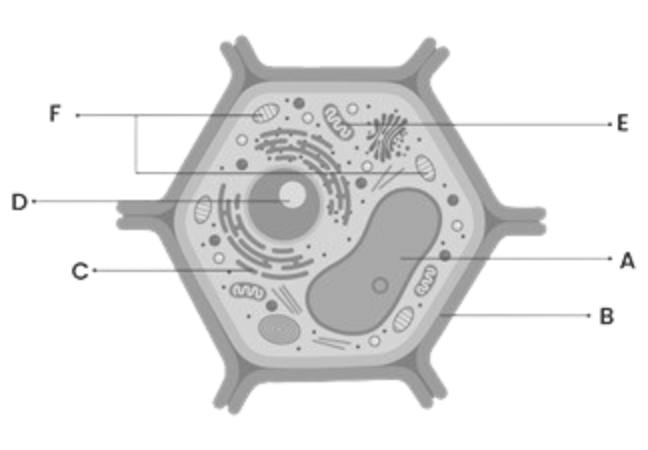

Sel Tumbuhan
Sel pada tumbuhan adalah unit terkecil dari kehidupan tumbuhan. Seperti organisme lainnya, tumbuhan juga terdiri dari sel-sel yang memiliki struktur dan fungsi khusus. Sel-sel tumbuhan memiliki peran penting dalam menjalankan berbagai fungsi kehidupan tumbuhan.
Struktur Sel Tumbuhan


Sitoplasma dan Membran Sel
(Klik gambar untuk penjelasan lebih lanjut)
Sitoplasma & Membran Sel
Sitoplasma
Seringkali sitoplasma diartikan sebagai carian di dalam membran sel. Namun ternyata hal itu tidak benar.
Felix Dujardin (1835) mengemukakan bahwa isi sel tersebut berupa cairan yang oleh Johannes Purkinje (1840) dan Hugo Van Mohl (1846) menyebutnya dengan istilah protoplasma. Protoplasma adalah segala sesuatu yang berada di dalam membran sel. Protoplasma dibagi menjadi 2, yakni nukleoplasma dan sitoplasma.
Nukleoplasma terdiri dari membran nukleus, nukleolus, dan carian yang ada di nukleus. Sedangkan sitoplasma adalah segala sesuatu yang berada di dalam membran sel kecuali nukleus. Sitoplasma dibagi menjadi 2 yakni sitosol (cairan) dan organel (padatan). Sitosol inilah yang merupakan carian dalam sitoplasma.
Sitoplasma berfungsi sebagai tempat peyimpanan bahan-bahan kimia yang paling penting bagi metabolisme sel, seperti enzim-enzim, ion-ion, gula, lemak, dan protein.
Membran Sel
Membran sel berbentuk bilayer fosfolipid. Fosfolipid merupakan lemak yang bersenyawa dengan fosfat. Sedangkan bilayer artinya berlayer/ganda. Jadi bilayer fosfolipid artinya 2 lapisan fosfolipid. Fosfolipid merupakan suatu molekul amfipatik yang berarti bahwa molekul ini memiliki daerah hidrofilik (dapat mengikat air) maupun daerah hidrofobik (tidak dapat mengikat air). Fosfolipid terdiri dari kepala fosfat yang bersifat hidrofilik karena fosfat dapat mengikat air dan ekor lipid yang bersifat hidrofobik karena lipid tidak dapat mengikat air.
Membran plasma atau membran sel tersusun atas molekul lemak dan protein. Molekul lemak tersusun atas dua lapis yang terdapat dibagian tengah membran (bilayer fosfolipid). Di sebelah luarnya terdapat lapisan protein perifer (protein tepi) yang menyusun tepi luar dan dalam. Protein yang masuk ke lapisan lemak itu disebut protein integral.
Membran sel bersifat semi-permeable. Semi-permeable adalah membran yang hanya dapat dilewati oleh molekul-molekul tertentu. Berdasarkan Teori Overton bahwa struktur dan sifat molekul-molekul penyusun pada membran sel akan mencegah pertukaran molekul dari satu sisi ke bagian lainnya serta memungkinkan substansi tertentu masuk ke sitoplasma dari lingkungan luar, mencegah masuknya senyawa tertentu masuk ke sitoplasma.
Fungsi membran plasma adalah melindungi isi sel, mengatur keluar masuknya molekul-molekul, dan sebagai reseptor (penerima) rangsangan dari luar sel.
Sintesis Protein
Proses sintesis protein melalui 2 tahap yakni transkripsi dan translasi. Transkripsi adalah proses pembentukan RNA yang berasal dari DNA. Sedangkan translasi adalah proses penerjemahan RNA menjadi protein.
Berikut adalah organel sel tumbuhan yang berperan dalam proses sintesis protein.
Nukleus
Nukleus merupakan organel paling besar di dalam sel yang berperan dalam mengatur aktivitas sel dan pembawa informasi genetik. Nukleus terbagi atas 3 bagian yakni membran nukleus, nukleoplasma (cairan nucleus) sebagai tempat beradanya kromosom, serta nukleolus sebagai tempat terjadinya transkripsi dalam proses sintesis protein. Transkripsi adalah proses pembentukan mRNA dengan menyalin sebagian berkas DNA.
Lebih jelasnya tentang proses transkripsi dapat ditonton pada video berikut.
Ribosom
Ribosom berperan penting dalam proses sintesis protein. Ribosom adalah tempat terjadinya proses translasi, yakni menerjemahkan mRNA menjadi polipeptida (protein).
Lebih jelasnya tentang proses translasi dapat ditonton pada video berikut.
Retikulum Endoplasma
Retikulum endoplasma merupakan organel yang berfungsi dalam proses transportasi protein. Membran RE menyatu dengan membran nukleus sehingga hasil sintesa protein pada nukleus akan langsung dibawa ke sitoplasma melewati RE.
Ada 2 jenis retikulum endoplasma, yakni RE halus dan RE kasar. RE halus adalah RE yang tidak ditempeli ribosom sedangkan RE kasar adalah RE yang ditempeli ribosom. RE yang terlibat dalam sintesis protein adalah RE kasar. RE kasar berfungsi menampung protein yang disintesis oleh ribosom untuk disalurkan ke badan golgi. Sedangkan RE halus berfungsi sebagai tempat metabolisme asam lemak misalnya pada sel pangkreas.
Badan Golgi
Badan golgi adalah organel berkantung pipih yang terlibat dalam proses sekresi protein. Di badan golgi, protein dimodifikasi dan disimpan, kemudian dikirimkan ke berbagai tujuan. Organel ini menyisipkan gugus fosfat atau gula dan memotong rantai polipeptida tertentu, yang menghasilkan produk akhir berupa protein membran, protein untuk sekresi, dan enzim.
Badan golgi memiliki 2 kutup yakni cis dan trans. Sisi cis bekerja sebagai bagian penerimaan yang biasanya terletak di dekat RE sedangkan sisi trans bekerja sebagai pengirim. Vesikel transport menggerakkan materi dari RE menuju badan golgi. Vesikel itu dapat menambahkan membrannya dan isi lumennya ke sisi cis dengan cara bergabung dengan membran golgi. Sisi trans memunculkan vesikel yang terlepas dan berpindah ketempat lain.
Sintesis Energi
Dalam sel tumbuhan, organel yang terlibat dalam proses sintesis energi ada 2, yakni mitokondria dan kloroplas.
Mitokondria
Mitokondria merupakan salah satu tempat terjadinya respirasi seluler. Tujuan dilakukannya proses respirasi ini yaitu untuk menghasilkan energi dalam bentuk ATP (Adenosine Triphosphate). Berikut adalah reaksi kimia pembentukan ATP.
C6H12O6 + O2 → CO2 + H2O + ATP
Mitokondria tersusun atas membran rangkap yakni membran dalam dan membran luar. Membran luar halus, memiliki fosfolipid, dan mengandung protein khusus yang disebut porin sehingga menyebabkan membran ini bersifat permeable.
Membran dalam merupakan tempat utama pembentukan ATP. Membran ini diperluas secara berulang-ulang menjadi lipatan yang masuk ke dalam ruangan pada mitokondria. Membran luarnya merupakan batas halus yang tak putus bagi mitokondria, sedangkan Lipatan dalam yang seperti rak ini disebut krista.
Selain itu ada juga cairan mitokondria yang disebut matriks. Matriks merupakan campuran kompleks enzim yang penting untuk sintesis molekul ATP, ribosom mitokondria khusus, RNA dan DNA mitokondria. Selain itu, ia memiliki oksigen, karbon dioksida dan intermediet daur ulang lainnya.
Kloroplas
Kloroplas berperan penting dalam proses fotosintesis. Kloroplas berisi zat hijau daun yang disebut klorofil. Klorofil ini menangkap energi matahari dan berguna dalam fotosintesis zat makanan. Fotosintesis adalah suatu proses pengubahan zat anorganik H2O dan CO2 oleh klorofil dengan bantuan cahaya matahari menjadi zat organik. Dimana hasil dari fotosintesis salah satunya adalah oksigen dan glukosa yang selama ini kita hirup. Berikut adalah reaksi kimia dari fotosintesis.
CO2 + H2O + cahaya matahari → C6H12O6 + O2
Kloroplas dikelilingi membran ganda, yaitu membran luar dan membran dalam. Membran luar bersifat permeabel sedangkan membran dalam bersifat semipermeabel. Membran luar berfungsi untuk mengatur keluar masuknya zat.
Di dalam membran dalam terdapat stroma, tilakoid, dan grana. Stroma berfungsi untuk menyimpan hasil fotosintesis dalam bentuk pati dan sebagai tempat terjadinya reaksi gelap (siklus calvin). Tilakoid adalah sistem bermembran berbentuk kantong-kantong pipih yang saling berhubungan. Tilakoid yang bertumpuk disebut grana. Grana tersusun atas granum-granum yang berperan sebagai tempat terjadinya reaksi terang.
Apa itu reaksi terang dan reaksi gelap?
Proses fotosintesis dibagi menjadi 2 proses, yakni reaksi terang dan reaksi gelap. Reaksi terang adalah reaksi yang membutuhkan sinar matahari. Reaksi terang memecah H2O menjadi O2 lalu menghasilkan ATP dan NADPH. Sedangkan reaksi gelap adalah reaksi yang tidak memerlukan sinar matahari. Reaksi gelap menggabungkan ATP dan NADPH yang telah dihasilkan sebelumnya dengan CO2 sehingga menghasilkan Gliseraldehit 3-fosfat (G3P) yang akan digunakan untuk membentuk glukosa.
Untuk penjelasan lebih jelasnya ada pada video di bawah ini
Organel Ber-enzim
Organel berenzim dalam sel tumbuhan hanya ada 1 yakni proksisom.
Peroksisom
Peroksisom mengandung enzim katalase yang berfungsi untuk memecah hidrogen peroksida (H2O2) menjadi H2O dan O2 oleh karena itu organel ini dinamakan peroksisom. Hidrogen peroksida merupakan hasil samping dari proses respirasi sel yang bersifat racun. Salah satu cara untuk mencegah hidrogen peroksida membahayakan tubuh adalah dengan melisiskan senyawa tersebut. Enzim katalase yang dihasilkan peroksisom akan memecah hidrogen peroksida (H2O2) menjadi H2O dan O2 sehingga tidak membahayakan bagi tubuh. Sel yang banyak mengandung peroksisom dapat kita jumpai pada sel hati yang bertugas untuk menetralisir racun.
Peroksisom bukan bagian dari sistem endomembran karena peroksisom tumbuh dengan cara menggabungkan protein dan lipid yang dibuat dalam sitosol. Peroksisom memperbanyak jumlahnya dengan membelah diri menjadi dua bagian setelah berada dalam ukuran tertentu.
Sitoskeleton
Sitoskeleton adalah sebuah kerangka yang terkandung di dalam sitoplasma sel. Fungsinya adalah untuk memberi bentuk serta menyokong struktur sel dan organel lain pada sel. Sitoskeleton juga membentuk sentriol yang berperan dalam pembelahan sel serta pembentukan silia dan flagella.
Sitoskeleton terdiri dari 3 filamen, yaitu mikrotubulus, filamen intermediet, dan mikrofilamen.
Mikrotubulus
Mikrotubulus berbentuk silinder berongga dan bersifat lebih kokoh daripada kedua jenis filamen lainnya. Pada dinding tabungnya memiliki rongga yang dibangun dari protein globular yang disebut tubulin. Setiap molekul tubulin terdiri atas dua subunit polipeptida yang berbeda, α-tubulin dan β-tubulin.
Mikrotubulus memiliki 2 fungsi utama yaitu, membantu gerakan sel pada silia dan flagella, dan membantu proses pembelahan sel.
Struktur mikrotubul terdiri dari sembilan doublet mirkrotubul dan terdapat dua mikrotubul tunggal. Susunan tersebut sering disebut sebagai rangkaian “9 + 2”, dimana pada setiap doublet saling terhubung antara satu dengan yang lain oleh protein dynein. Protein dynein merupakan molekul motor yang bertanggung jawab untuk gerakan membelok silia dan flagella.
Mikrotubulus juga terdapat dalam sentrosom. Saat proses pembelahan sel, mikrotubulus akan menarik kromosom ke sisi yang bersebrangan. Hal ini yang dikenal dengan benang spindel.
- Berikut adalah fungsi mikrotubulus :
- Alat transportasi intraseluler yang terhubung dengan dyneins dan kinesins yang dapat mengangkut organel seperti mitokondria dan vesikel
- Jalur bergerak bagi organel
- Pengatur posisi organel dalam sel
- Alat pergerakan kromosom dalam pembelahan sel
- Pembantu dalam mitosis spindle
- Tempat pembentukan sentriol, flagella, dan silia
- Mensintesis dinding sel pada tumbuhan
- Migrasi vakuola endositosis
Filamen Intermediate
Filamen intermediate berbentuk seperti benang berongga. Filamen ini bersifat kenyal dan memiliki daya rentang yang sangat tinggi. Filamen intermedia banyak dijumpai di sekitar inti, menjulur ke arah perifer sel. Filamen intermediet banyak terdapat di dalam sel yang mengalami stress mekanik misalnya di epitelium, akson sel saraf, dan otot polos.
Pembentukan filamen intermediet didasarkan pada polimerisasi filamen. Dua monomer filamen bergabung membentuk struktur coil. Dimer ini akan bergabung dengan dimer lainnya membentuk tetramer, tetapi posisinya saling tidak paralel. Ketidakparalelan ini membuat tetramer dapat berasosiasi dengan tetramer lain (mirip struktur penyusunan batu bata). Pada akhirnya, tetramer-tetramer bergabung membentuk sebuah array heliks.
- Berikut adalah fungsi filamen intermediate :
- Mengatur struktur internal sel
- Penahan organel
- Komponen struktur lamina nuklir dan sarkomer
- memberi kekuatan mekanis pada sel sehingga sel tahan terhadap tekanan dan peregangan yang terjadi pada dinding sel
Mikrofilamen (Filamen Aktin)
Mikrofilamen merupakan filamen tertipis dari sitoskeleton. Mikrofilamen disebut juga filamen aktin karena terbuat dari protein globular yang disebut aktin. Filamen ini terdiri dari polimer linear dari subunit mikrovili yang menghasilkan kekuatan dengan perpanjangan di salah satu ujung filamen. Mikrofilamen memiliki fungsi utama yakni dalam pergerakan sel.
- Berikut adalah fungsi mikrofilamen :
- Menahan tegangan (gaya tarik)
- Mempertahankan bentuk sel
- Berperan dalam perubahan bentuk sel kontraksi otot
- Mikrofilamen biasanya membentuk jaringan sub membran plasma untuk mendukung bentuk sel
- Kontraksi otot (filamen aktin bergantian dengan serat yang lebih tebal dari myosin, membentuk protein motor, dalam jaringan otot)
- Siklosis (pergerakan komponen sitoplasma di dalam sel)
- Pergerakan ‘amuboid’ dan fagositosis
- Bertanggung jawab untuk pemutusan galur pada sitokinesis
Organel Khas Sel Tumbuhan
Hanya ada 3 organel yang membedakan antara sel tumbuhan dengan sel hewan. Ketiga organel ini hanya dimiliki oleh sel tumbuhan.
Berikut adalah kegita organel tersebut.
Dinding Sel
Dinding sel terletak di luar membran plasma dengan bentuk yang tebal. Dinding sel tersusun atas polisakarida, lipid dan protein yang berfungsi sebagai pelindung sel dan memberi bentuk yang konstan. Polisakarida dalam dinding sel tumbuhan adalah selulosa. Selulosa termasuk polimer dari glukosa, yang memiliki unsur karbon, hidrogen, dan oksigen. Pada dinding sel terdapat pori-pori sebagai jalan keluarnya molekul.
Berikut adalah fungsi dinding sel pada sel tumbuhan.
1. Menjaga tekanan turgor
Dinding sel yang kokoh membantu menjaga tekanan turgor, yaitu tekanan internal yang dihasilkan oleh cairan sel (sitoplasma) terhadap dinding sel. Ini penting untuk menjaga kekakuan sel dan memberikan dukungan struktural pada tumbuhan.
2. Memberikan bentuk pada sel dan menjaga bentuk sel
Dinding sel memberikan struktur dan bentuk pada sel tumbuhan. Tanpa dinding sel yang kuat, sel-sel tumbuhan akan kehilangan bentuknya dan mungkin tidak dapat menjalankan fungsi dengan baik.
3. Menyediakan kekuatan mekanis
Dinding sel yang kaku memberikan dukungan mekanis yang diperlukan untuk menjaga struktur dan integritas tumbuhan, terutama pada organ-organ seperti batang dan batang.
4.Melindungi sel dari tekanan mekanis
Dinding sel berfungsi sebagai perlindungan fisik bagi sel tumbuhan terhadap tekanan eksternal yang dapat merusak sel.
5. Membantu proses difusi materi melalui apoplast.
Dinding sel menyediakan jalur untuk difusi materi melalui apoplast, yaitu ruang di antara dinding sel seluler. Ini memfasilitasi pergerakan air, nutrisi, dan zat-zat lainnya melalui tumbuhan.
6. Sebagai tempat pertukaran zat
Dinding sel memungkinkan pertukaran zat seperti protein dan molekul-molekul kecil antara sel-sel tumbuhan, memungkinkan koordinasi dan komunikasi antar sel.
7. Menjaga homeostasis pada sel
Dinding sel berperan dalam menjaga keseimbangan internal (homeostasis) sel tumbuhan dengan membatasi pergerakan zat-zat tertentu ke dalam dan keluar dari sel.
8. Sebagai tempat penyimpanan karbohidrat
Beberapa jenis dinding sel, seperti dinding sel biji, dapat menyimpan karbohidrat yang penting untuk pertumbuhan dan perkembangan sel tumbuhan.
Plastida
Plastida hanya terdapat pada sel tumbuhan. Biasanya kita hanya mengetahui bahwa plastida itu kloroplas. Namun ternyata bukan. Plastida ≠ Kloroplas.
Ada banyak jenis plastida. Salah satunya adalah kloroplas. Berikut jenis-jenis plastida berdasarkan fungsinya :
1. Kloroplas
Kloroplas berfungsi dalam proses fotosintesis. Di dalam kloroplas terjadi 2 reaksi, yakni reaksi terang dan reaksi gelap.
2. Kromoplas
Kromoplas merupakan bagian plastida yang mengandung pigmen berwarna (biasanya kuning, jingga, atau merah) karena mengandung beta karoten. Kromoplas berfungsi untuk sintesis pigmen. Beberapa jenis kromoplas yaitu : Karotin (kuning), Fikodanin (biru), Fikosantin (kuning), dan Fikoeritrin (merah).
3. Gerontoplas
Gerontoplas berfungsi untuk mengontrol pembongkaran hasil fotosintesis
4. Leukoplas
Leukoplas merupakan bagian plastida yang tidak berwarna. Leukoplas terkadang berubah menjadi bagian plastida yang lebih khusus seperti : Amiloplas, Elainoplas, dan Proteinoplas. Amiloplas berfungsi untuk menyimpan amilum (pati) dan mendeteksi gravitasi. Biasanya terdapat pada umbi tanaman. Elainoplas berfungsi untuk menyimpan lemak. Proteinoplas berfungsi untuk menyimpan dan memodifikasi protein.
Vakuola
Sel sel tumbuhan biasanya memiliki ukuran vakuola yang besar. Vakuola yang terdapat pada tumbuhan umumnya berisi air, fenol, alkaloid, antosianin, dan protein.
Vakuola ini berperan dalam hal penyimpanan zat makanan, penguraian zat sisa, sebagai zat hidrolisis makromolekul, dan sebagai pembesaran vakuola yang sangat berperan dalam mekanisme pertumbuhan pada tumbuhan.

Contoh Soal
1. Bagaimana adaptasi kloroplas terhadap lingkungan cahaya yang berbeda dapat mempengaruhi efisiensi fotosintesis dalam sel tumbuhan?
Kloroplas memiliki adaptasi terhadap lingkungan cahaya yang berbeda yang mempengaruhi efisiensi fotosintesis dalam sel tumbuhan. Misalnya, dalam kondisi cahaya rendah, kloroplas dapat mengatur distribusi klorofil dalam sel dan meningkatkan jumlah tilakoid dan grana untuk menangkap lebih banyak energi matahari. Di bawah cahaya yang berlebihan, kloroplas dapat mengatur ukuran tilakoid dan grana untuk mengurangi stres oksidatif dan melindungi sel dari kerusakan akibat eksposur berlebihan terhadap cahaya.
Show Answer
2.
Tuliskan huruf, nama dan fungsi dari bagian/organel yang khas yang dimiliki oleh sel tersebut?
A. Vakuola, berfungsi untuk menyimpan air dan menyimpan cadangan makanan
B. Dinding sel, berfungsi untuk memberikan bentuk sel dan melindungi organel di dalamnya karena dinding sel itu tebal. Selain itu dinding sel juga berperan dalam menjaga tekanan turgor sel yang dihasilkan oleh cairan di dalam sel, sehingga sel tumbuhan tidak lisis.
F. Kloroplas, berfungsi dalam proses fotosintesis
Show Answer
3. Bagaimana sel tumbuhan menyesuaikan struktur dan fungsi vakuola tergantung pada kondisi lingkungan?
Vakuola dalam sel tumbuhan berfungsi sebagai tempat penyimpanan air, garam, pigmen, dan zat-zat lainnya. Saat tumbuhan kekurangan air, vakuola menyusut untuk mengurangi tekanan turgor, yang membantu mencegah kekeringan. Sebaliknya, ketika tumbuhan memiliki akses yang cukup air, vakuola membesar untuk menyimpan cadangan air dan memberikan tekanan turgor yang diperlukan untuk dukungan sel dan jaringan.
Show Answer